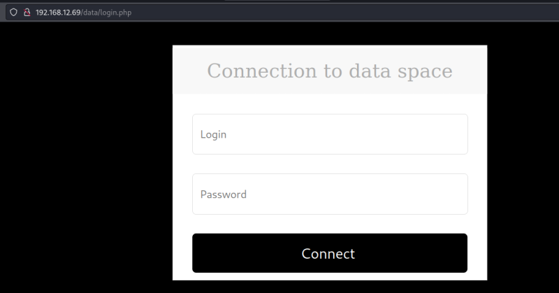
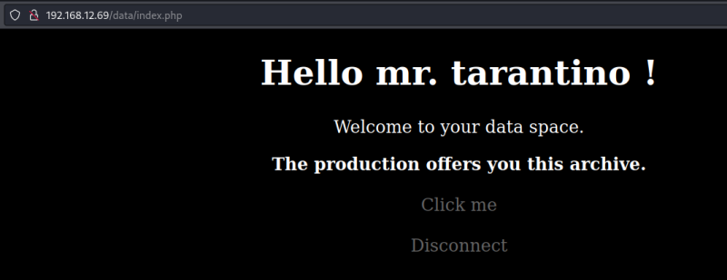
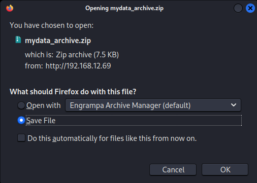

4.2 Log in
1. With the user credentials from the previous step log in at http://192.168.12.69/data/login.php.


2. Click on the “Click me” link. You will be able to download a file called “my_data_archive.zip”.

This archive has a password, so you can't descompress it.